class: center, middle question ansquers only ;) [back](index-2.html#) --- ## difference are between 'merge' and 'rebase' [back](index-2.html#13) considering `HEAD` is pointing to `develop` branch  the differences between ``` git merge master; git rebase master; ``` --- ## difference are between 'merge' and 'rebase' [back](index-2.html#1313) <div class="answer"> <div style="width:39%;"> <h6>merge:</h6> 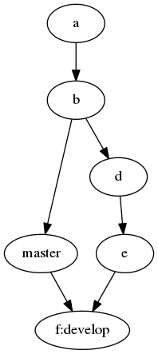 </div> <div style="width:60%; "> <h6>rebase:</h6> 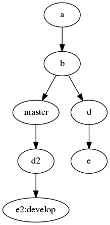 <img src="answers/merge_rebase_rebase2.png" /> </div> </div> <div class="footer"> What you see after the rebase is the very right one, because there is no pointer to the `e` commit. The left one shows the original commits. </div> --- ## difference are between 'pull' and 'pull --rebase' [back](index-2.html#13) considering `HEAD` is pointing to `develop` branch  the differences between ``` git pull origin master; git pull --rebase origin master; ``` --- ## difference are between 'pull' and 'pull--rebase' [back](index-2.html#13) <div class="answer"> <div style="width:39%;"> <h6>pull:</h6> 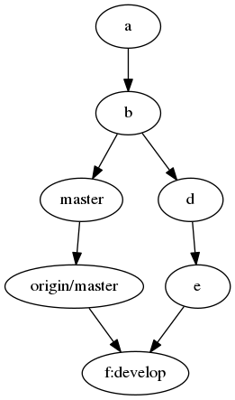 </div> <div style="width:60%; "> <h6>pull --rebase:</h6> 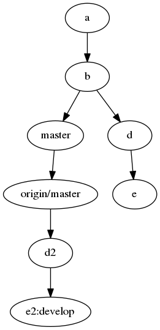 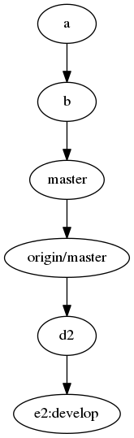 </div> </div> <div class="footer"> A pull makes a `fetch` and a `merge`, so you can retrieve unnexpected commits from the remote and merge against them. </div> --- ## difference are between 'fetch', 'pull' and 'merge' [back](index-2.html#13) ``` git pull origin master; ``` is equivalent to the sequence: ``` git fetch origin; git merge origin/master; ``` - the `fetch` command only updates the remote references - the `pull` command merges the remote reference into your branch --- ## "fast-foward" meaning in a "git merge" context [back](index-2.html#13) <div class="answer"> <div style="width:39%;"> <h6>no fast-forward available:</h6> 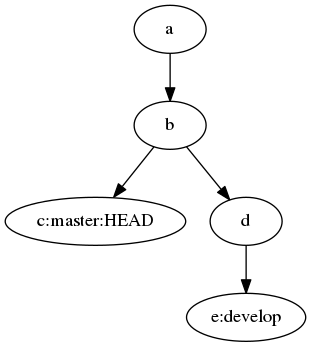 </div> <div style="width:60%; "> <h6>fast-forward available:</h6> 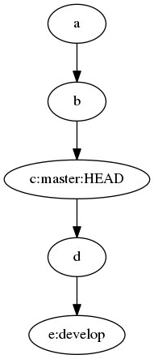 </div> </div> <div class="footer"> The "fast-forward" is feasable in the right graph because `master` commits are reachable from `develop` </div> --- ## "fast-foward" meaning in a "git merge" context [back](index-2.html#13) <div class="answer"> <div style="width:29%;"> <h6>initial:</h6> </div> <div style="width:34%;"> <h6>`git merge develop`</h6> 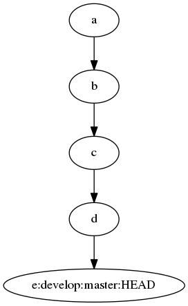 </div> <div style="width:36%;"> <h6>`git merge --no-ff develop`</h6> 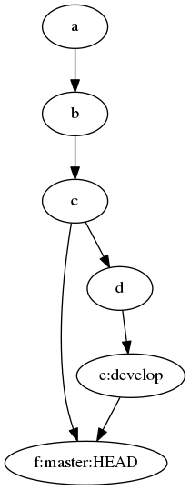 </div> </div> <div class="footer"> If doing a merge without allowing a "fast-forward", it will be created a merge commit. You can use `--ff-only` to prevent merges without "fast-forward" </div> --- ## Octopus merges. Merges with more than 2 parents [back](index-2.html#13) considering that `HEAD` is pointing to `master` branch, and you want to integrate there the other two development branches...  --- ## Octopus merges. Merges with more than 2 parents [back](index-2.html#13) <div class="answer"> <div style="width:60%;" class="two-images"> <h6>two consecutive merges</h6> 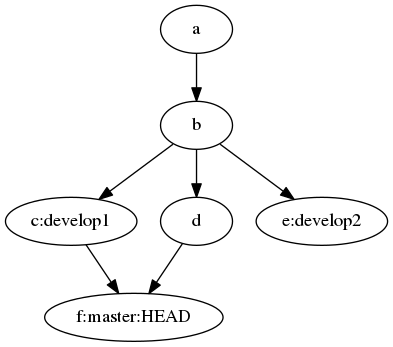 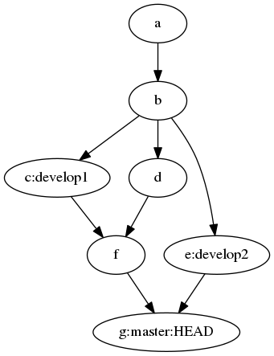 </div> <div style="width:35%;"> <h6>`git merge develop1 develop2`</h6> 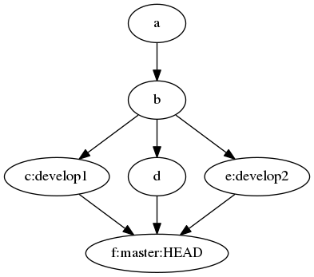 </div> </div> <div class="footer"> The octopus merge will fail with a conflict if it can not be cleanly completed. </div> --- ## 'ours' and 'theirs' in a 'merge' vs 'rebase' context [back](index-2.html#13) - `ours` represents the point where the `HEAD` was before adding the commit, - `theirs` represents the commits that are "comming" Being the `HEAD` pointing to `develop` 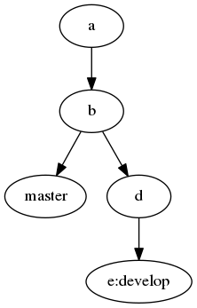 ``` git merge master ``` Causes an expected meaning of `ours` and `theirs` ``` git rebase master ``` Since the rebase performs a checkout to `master` (changes the `HEAD` pointer) and then `cherry-pick` the commits from `develop` not being reachable from `master`, the meaning of `ours` and `theirs` is the opposite of the `merge` --- ## Differences between local and remote branches [back](index-2.html#14) With `fetch` command you will update remote pointers. Then, you can do ``` git diff master origin/master ``` --- ## Commit only certain parts of a file [back](index-2.html#14) With `add -p` command you can add only certain parts of a file ``` git add -p filename ``` --- ## Create a new branch from any point [back](index-2.html#14) ``` git branch [-f] branch-name commit-hash-or-refference ``` Will create a branch called `branch-name` from the passed commit or reference ``` git checkout (-b|-B) branch-name commit-hash-or-refference ``` Will do the same than previous command, and will checkout to that new branch. --- ## Git stash [back](index-2.html#14) The git stash is a LIFO pile of "patches" - `git stash list`: lists the "patches" - `git stash`: cleans the working directory and staging area and saves it "somewhere" - `git stash apply stash@{n}`: apply the "patch" identified as `stash@`{n}" over the current `HEAD` - `git stash pop`: apply the first "patch" from the LIFO pile, and deletes it - `git stash drop`: removes the first "patch" from the LIFO pile --- ## Delete a remote branch [back](index-2.html#14) The generic push command is: ``` git push remote-name local-branch-name:remote-branch-name ``` Then, to delete a remote branch you can do: ``` git push remote-name :branch-to-delete-name ``` I have my own shell alias for that: ``` alias rmBranch='function _F { git branch -D $1; git push mine :$1;}; _F ' ``` So I can do the following to delete a local branch and its remote one: ``` rmBranch branch-to-delete-name ``` --- ## remove files from the "staging area" [back](index-2.html#14) ``` git reset file-name ``` all of them! ``` git reset . ``` --- ## revert a commit [back](index-2.html#14) If it has been already pushed, you might don't want to alter the history, so you should do: ``` git revert commit-hash ``` --- ## What will be commited if I commit? [back](index-2.html#14) You must do, always before commiting: ``` git diff --cached ``` --- ## What are my mate's branches [back](index-2.html#14) You need to add your mate's remote ``` git remote add mate-remote-name mate-remote-url ``` and then fetch and view the branches: ``` git fetch mate-remote-name; git branch -va ``` --- ## Work with tags [back](index-2.html#14) To view tags and descriptions: ``` git tag -ln ``` To create a tag called "tag-name" from any "commit-hash-or-refference". ``` git tag -a tag-name -m "tag description" commit-hash-or-refference ``` To share a tag: ``` git push remote-name tag-name ``` --- ## To recover a deleted branch [back](index-2.html#14) Just create a branch pointing to the old place ;) --- ## Why do I need to push --force [back](index-2.html#15) It happens when the server can not merge the branch you are pushing, agains **its** local branch. 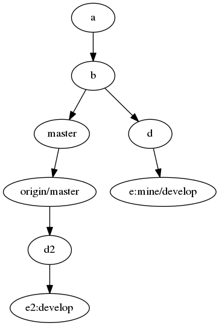 You can solve it with a `merge`... or rewriting the history. **Because the history sometimes needs to be rewriten.** Example: when you are preparing a pullrequest with repeated rebases against origin/master to be updated with the last origin changes. Or once the PR is accepted, you want to update the branch that is going to be merged, with the latest changes at origin/master. --- ## Append things to the last commit [back](index-2.html#15) ``` git commit --amend [-m "new message"] ``` --- ## To reorder commits [back](index-2.html#15) ``` git rebase -i HEAD~n ``` It let you to rearrange "n" commits before `HEAD` --- ## To find already merged branches [back](index-2.html#15) You can find the branches whose tips are reachable from any `branch-name` doing: ``` git branch --merged branch-name ``` And those whose tips are not reachable from `branch-name` are listed with: ``` git branch --no-merged branch-name ``` --- ## To move a certain group of commits [back](index-2.html#15) It is a special case of the rebase, that let you to move some commits from one place to another. You can do it with many `cherry-pick`, but the faster way is: ``` git rebase --onto destiny-point-reff starting-point-ref ending-point-ref ``` It will copy the commits from reachable from `ending-point-ref` not being under `starting-point-ref`, and will paste them onto `destiny-point-ref` --- ## To move a certain group of commits [back](index-2.html#15) <div class="answer"> <div style="width:30%;"> <h6>initial</h6> 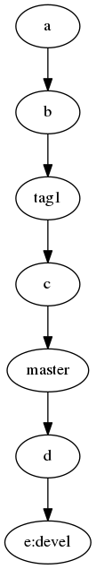 </div> <div style="width:65%;" class="two-images"> <h6>after the rebase</h6> 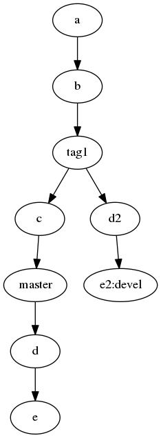 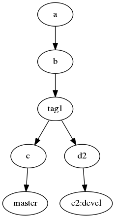 </div> </div> <div class="footer"> git rebase --onto tag1 master devel </div> --- ## Prettier graphs [back](index-2.html#15) I use my own alias: ``` alias gitlog='git log --graph --abbrev-commit --decorate --all --format=format:"%C(bold blue)%h%C(reset) - %C(bold cyan)%aD%C(dim white) - %an%C(reset) %C(bold green)(%ar)%C(reset)%C(bold yellow)%d%C(reset)%n %C(white)%s%C(reset)%n"' ``` and then... ``` gitlog ``` --- class: center, middle bye